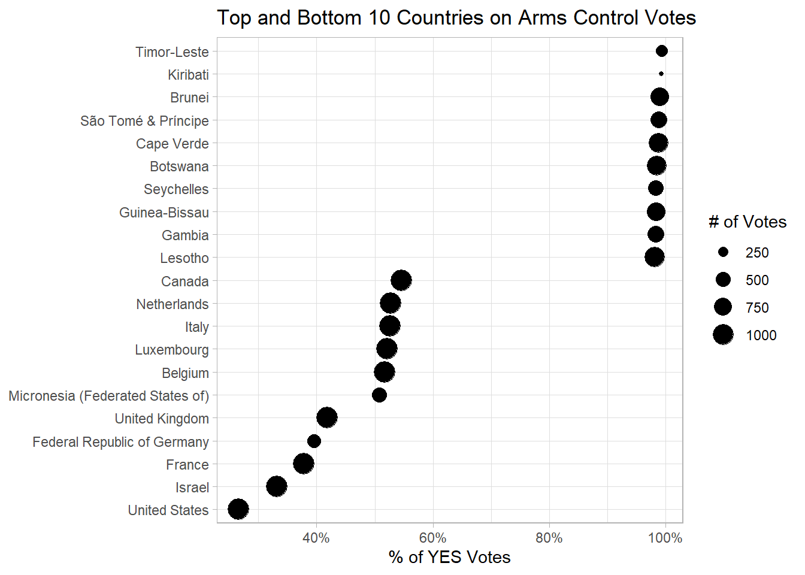
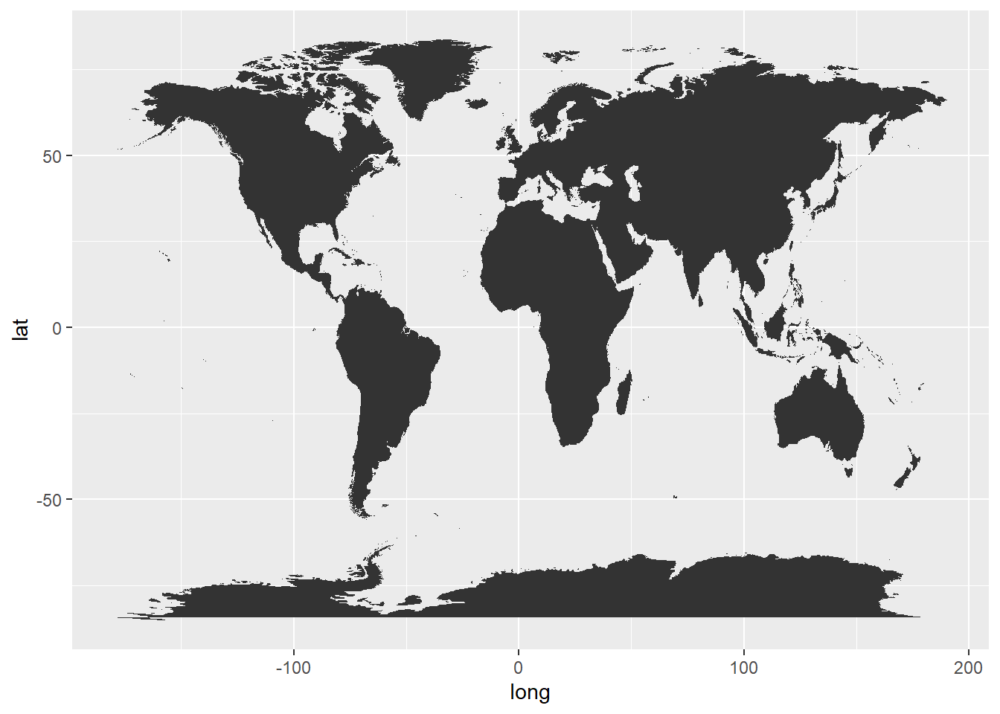
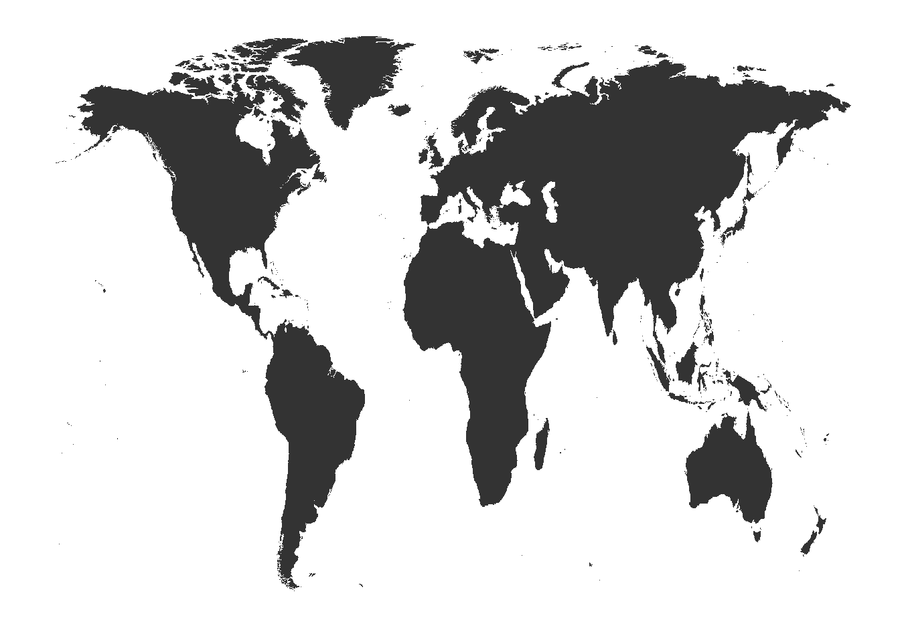
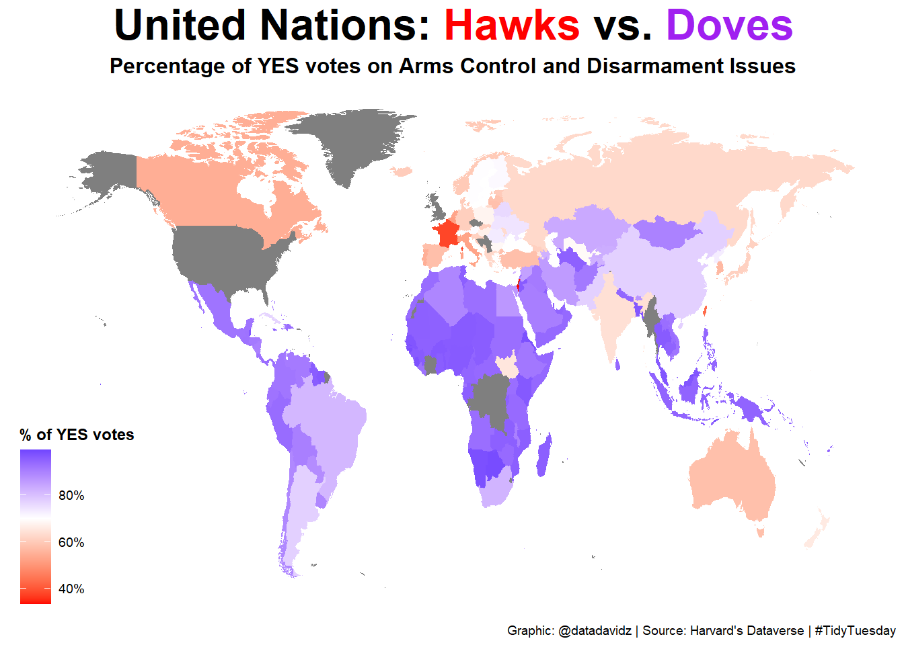
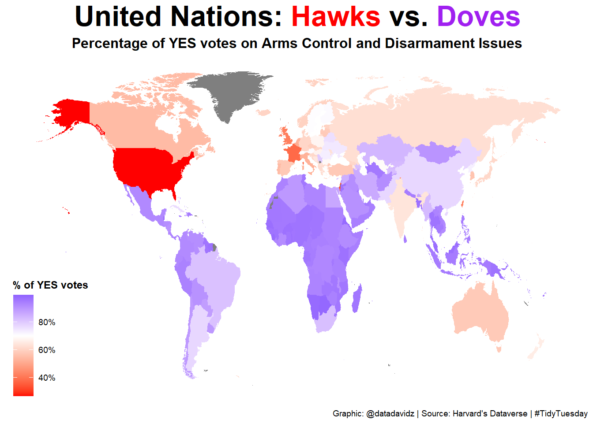

Posted on March 23, 2021
A quick analysis of the weekly #TidyTuesday dataset organized by the R4DS Online Learning Community. My approach is to apply my data science skills to explore one question I have about the data and generate a visualization that addresses this question. The main purpose for me is to practice and try out new things. I am never completely satisfied with the end result but I do the best I can in a short period of time.
What I learned this week about R and the Tidyverse
maps::iso3166 and fuzzyjoinBrief explanation of the dataset
This dataset consists of votes from countries which are members of the United Nations. The unvotes dataset contains an ID for each vote and the vote result for each country (Yes, No, Abstain). The issues dataset contains the type of issue the vote pertains to. There are six different issues including Arms Control and Disarmament, Colonialism and Palestinian Conflict. A third dataset containing the date information for the votes was available but not used in this analysis. The dataset is also available in the unvotes R package.
Initial conclusions from exploring the unvotes dataset:
Initial conclusions from exploring the issues dataset:
Let’s begin by adding the issue to the unvotes dataset and then calculate the percentage of “YES” votes for each country and issue.
by_issue <- unvotes %>%
left_join(issues %>% select(rcid, issue), by = "rcid") %>%
filter(!is.na(issue)) %>%
mutate(country_code = ifelse(country == "Namibia", "NA", country_code)) %>% #correct for NA assignment
mutate(country_code = ifelse(country == "Yugoslavia", "RS", country_code)) %>% #assign Yugoslavia to Serbia
group_by(country, country_code, issue) %>%
summarize(n_votes = n(),
n_yes = sum(vote == "yes"),
pct_yes = n_yes / n_votes,
.groups = "drop")Let’s focus on the Arms control and disarmament issue. Which countries have the highest and lowest percentage of “YES” votes on this issue? The top 10 and bottom 10 are subsetted from the data using the slice command as shown below.
by_issue %>%
filter(issue == "Arms control and disarmament") %>%
filter(n_votes >= 100) %>%
arrange(desc(pct_yes)) %>%
slice(c(1:10, (n()-10):n())) %>%
mutate(country = fct_reorder(country, pct_yes)) %>%
ggplot(aes(x = pct_yes, y = country)) +
geom_point(aes(size = n_votes)) +
scale_x_continuous(labels = scales::percent) +
theme_light() +
labs(title = "Top and Bottom 10 Countries on Arms Control Votes",
x = "% of YES Votes",
y = NULL,
size = "# of Votes")
The United States and Israel have the lowest percentage of “YES” votes at the U.N. on the issue of arms control while small countries vote almost always as “YES”. Presumably, these small countries have little or no military and, therefore, likely to favor restrictions on arms to reduce the global threat to their country.
Next, we’ll create a world map using the maps package and the geom_map element for ggplot2 using the default settings.
world_map <- map_data("world")
ggplot() +
geom_map(data = world_map, map = world_map,
aes(long, lat, map_id = region))
Let’s remove Antarctica from the map since it is not a country and clean up the plot using theme_map from the ggthemes package.
map_data("world") %>%
filter(region != "Antarctica") %>%
ggplot(aes(long, lat, group = group)) +
geom_polygon() +
theme_map()
Now, I’d like to fill each country on a color scale correlating with the percentage of “YES” votes on the Arms Control and Disarmament issue. If I just join the unvotes data with the world map data, I get the following plot.
world_map %>%
filter(region != "Antarctica") %>%
left_join(filter(by_issue, issue == "Arms control and disarmament"), by = c("region" = "country")) %>%
ggplot(aes(x = long, y = lat, group = group, fill = pct_yes)) +
geom_polygon() +
theme_map() +
scale_fill_gradient2(low = "red", high = "blue", midpoint = 0.7, labels = scales::percent) +
labs(title = "United Nations: <span style = 'color:red;'>Hawks</span> vs. <span style = 'color:purple;'>Doves</span>",
subtitle = "Percentage of YES votes on Arms Control and Disarmament Issues",
fill = "% of YES votes",
caption = "Graphic: @datadavidz | Source: Harvard's Dataverse | #TidyTuesday") +
theme(plot.title = element_markdown(face = "bold", size = 24, hjust = 0.5),
plot.subtitle = element_text(face = "bold", size = 12, hjust = 0.5),
legend.title = element_text(face = "bold"))
As you can notice, several countries are shown in gray color meaning that the corresponding vote data was not found. We know, however, that data is present for the United States and United Kingdom based on previous analyses. The problem is that the country name on the issues dataset is not matching the region name in the world map dataset. To address this issue, we use data from the iso3166 dataset in the maps R package. The iso3166 data has a regex code in the mapname column to help with matching country names. The regex_left_join function comes from the fuzzyjoin package and applies the join using this regex code for each country.
world_data <- map_data("world") %>%
regex_left_join(maps::iso3166 %>%
select(mapname, country_code = a2), c(region = "mapname")) %>%
filter(region != "Antarctica")Now, we can plot the world map after the fuzzy join to assign the 2-character country code to the world map data. I can then combine the world map data with the unvotes data using the 2-character country code. Note: I had to manually adjust Namibia and Serbia as discussed in the Wrangle section.
world_data %>%
left_join(filter(by_issue, issue == "Arms control and disarmament"), by = "country_code") %>%
ggplot(aes(x = long, y = lat, group = group, fill = pct_yes)) +
geom_polygon() +
theme_map() +
scale_fill_gradient2(low = "red", high = "blue", midpoint = 0.7, labels = scales::percent) +
labs(title = "United Nations: <span style = 'color:red;'>Hawks</span> vs. <span style = 'color:purple;'>Doves</span>",
subtitle = "Percentage of YES votes on Arms Control and Disarmament Issues",
fill = "% of YES votes",
caption = "Graphic: @datadavidz | Source: Harvard's Dataverse | #TidyTuesday") +
theme(plot.title = element_markdown(face = "bold", size = 24, hjust = 0.5),
plot.subtitle = element_text(face = "bold", size = 12, hjust = 0.5),
legend.title = element_text(face = "bold"))
Text in the title is colored using ggtext to help the reader interpret the map. “Hawks” refers to countries more aligned to use military force to address conflicts while “Doves” refers to countries that would prefer to exhaust all diplomatic options before considering military action. This description doesn’t perfectly align with the Arms control and disarmament issue as we don’t know the specifics of each resolution however we see that countries with more military tend to vote against arms control resolutions with a few exceptions such as Iran and China.
This simple, world map visualization is effective in summarizing the voting trend for countries around the global on Arms control and disarmament issues. The coverage of the map is pretty impressive and aided by the fuzzy join to connect country names in the unvotes dataset with country names in the maps package.
A work by datadavidz